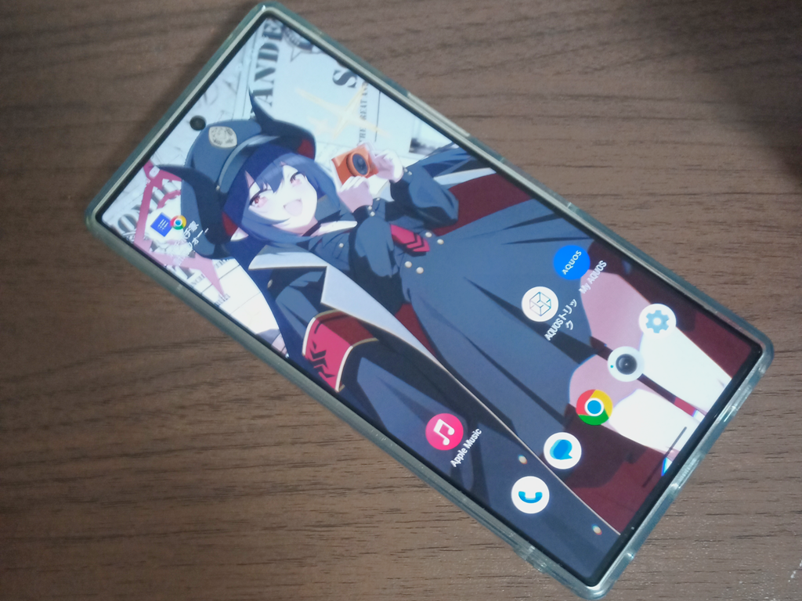

AQUOS R9の簡易的Review
はじめに
皆さん、お久しぶりです。えすろんです。
サイトの更新が滞っていましたが...
今回は、AQUOS R9の簡易レビューをします。

- SHARP AQUOS R9(SH-M28)
- CPU: Snapdragon 7+ Gen 3
- MEM: 12GB LPDDR5X
- ROM: 256GB UFS4.0
- Display: 6.5inch 2340x1080
- LDAC, Apt-X, LC3対応
- 良い点
- 性能は遥かに快適。
(8 Gen 3 の選別落ち説はあるが…) - カメラについても許容範囲。
望遠はゴミ。 - ゲームはそこそこやる人向き
高画質ゲーマーには確実に向いてない

- 気になる点
- ワイヤレス充電に非対応
ケーブル充電のみ - 指紋センサの反応が鈍い
認証できないのは日常茶飯事 - 体感、R8proよりも熱くなってるかも(個体差？)
おわりに
AQUOS R9は結構性能もいい。以上。
では、また。